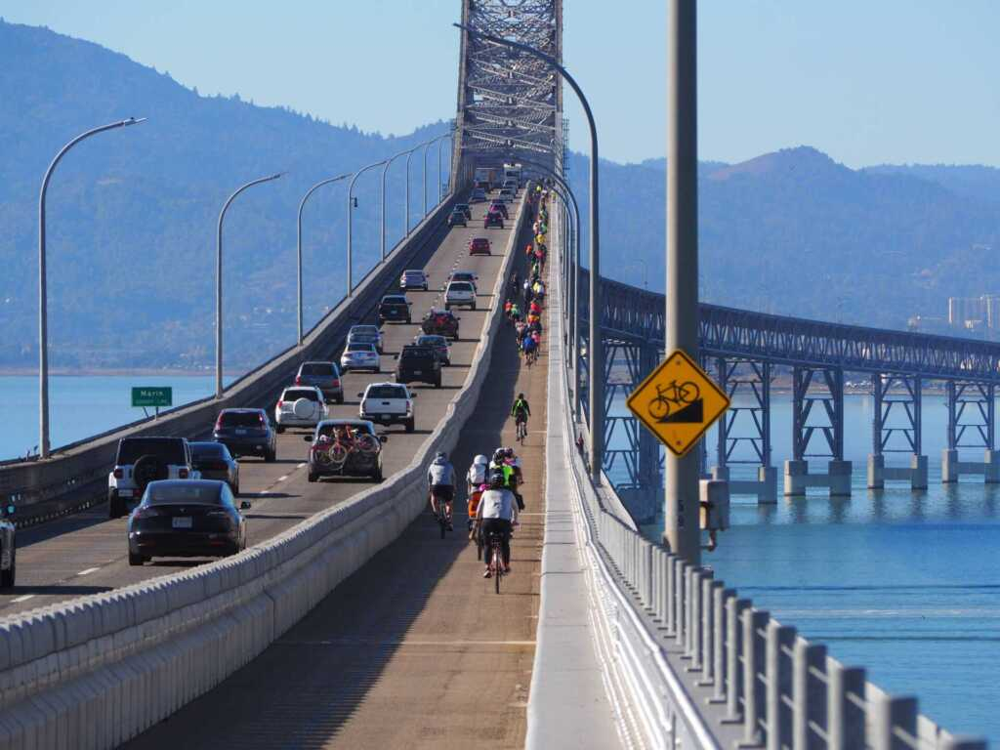
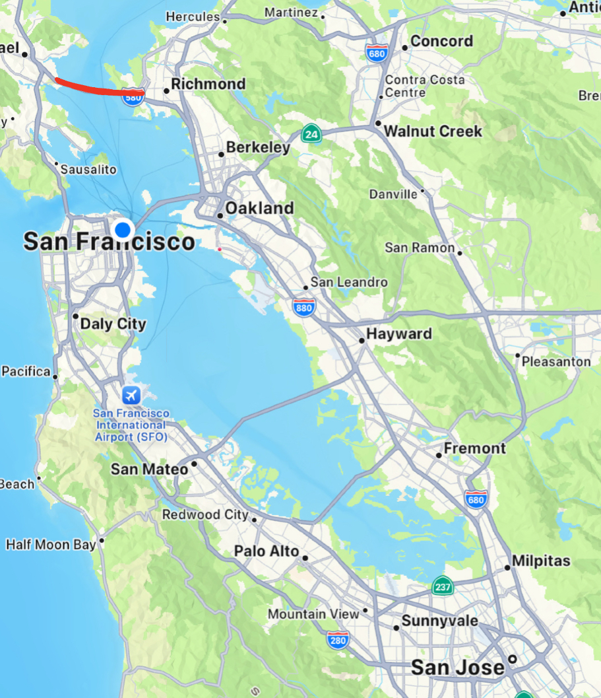
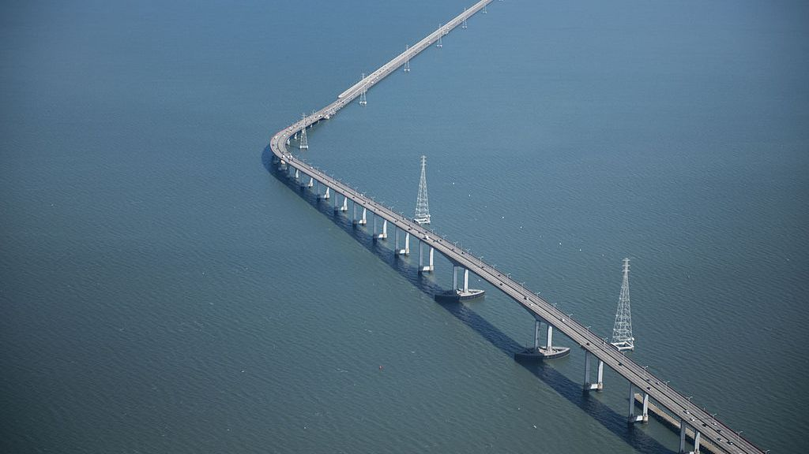
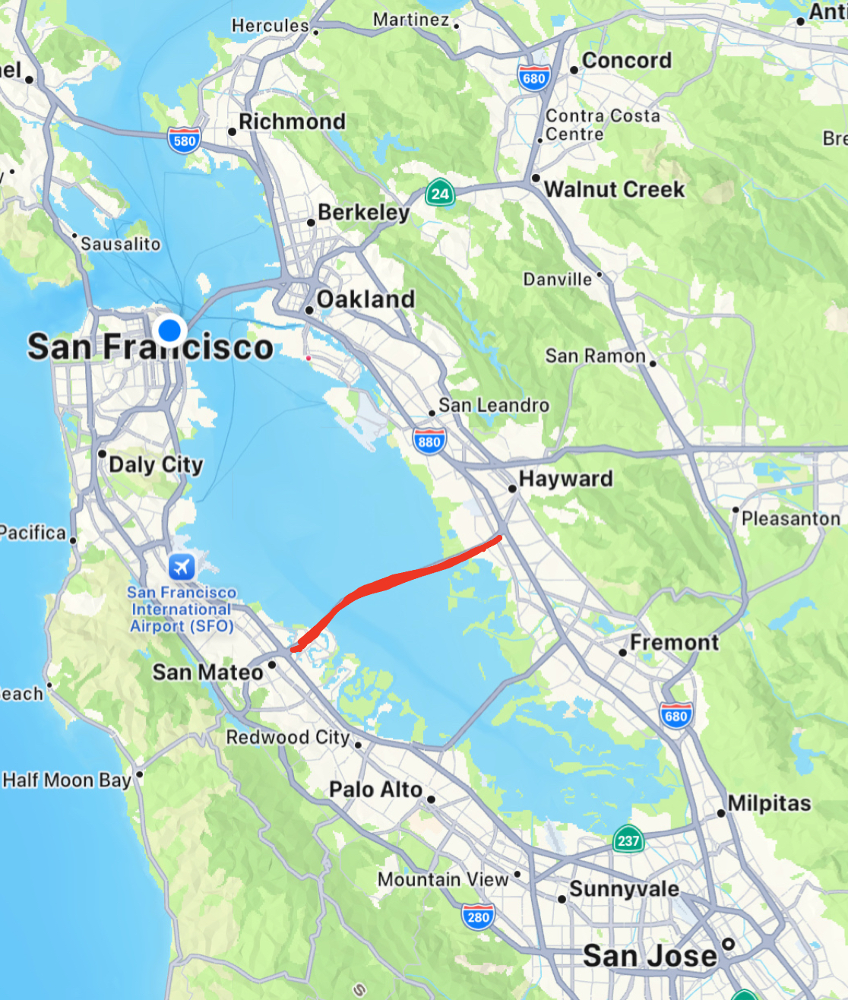
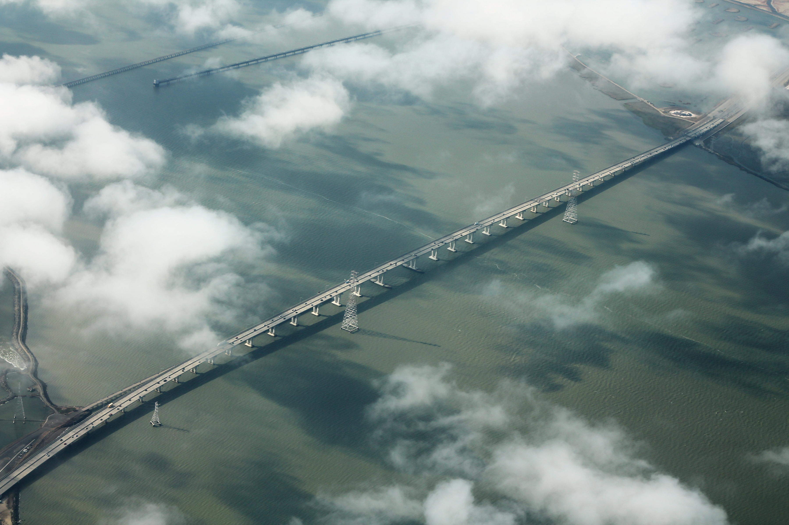
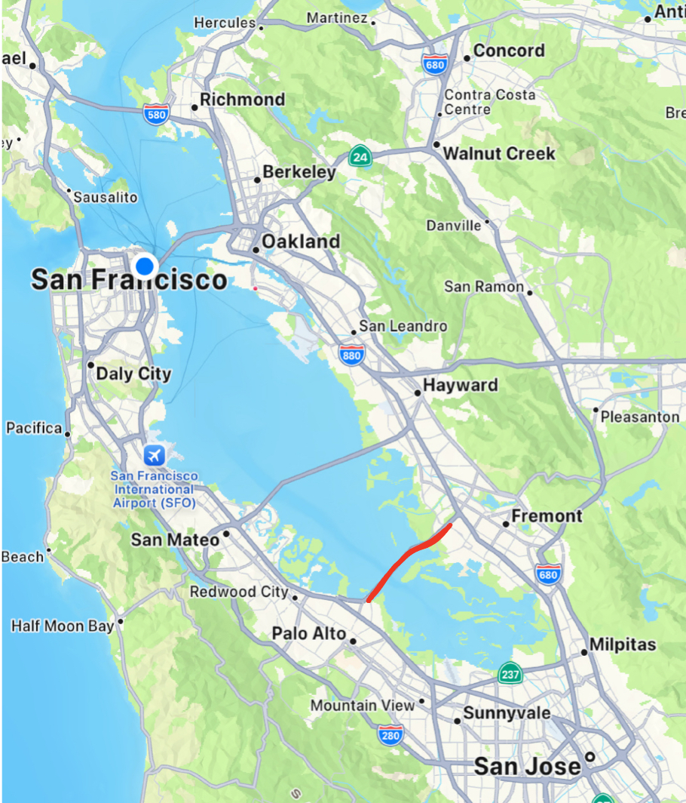
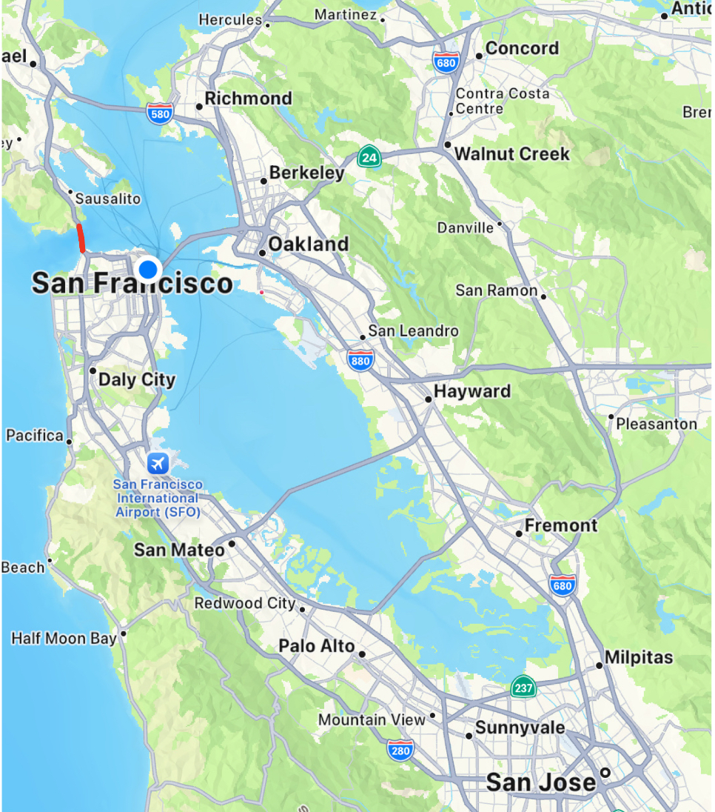
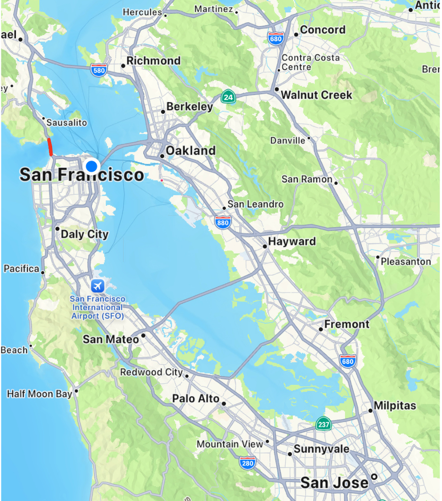
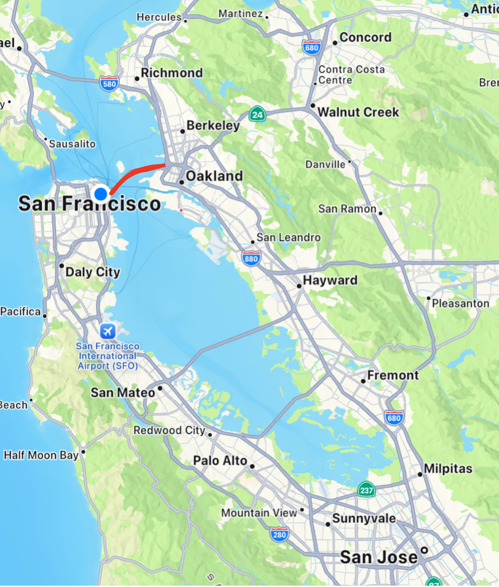
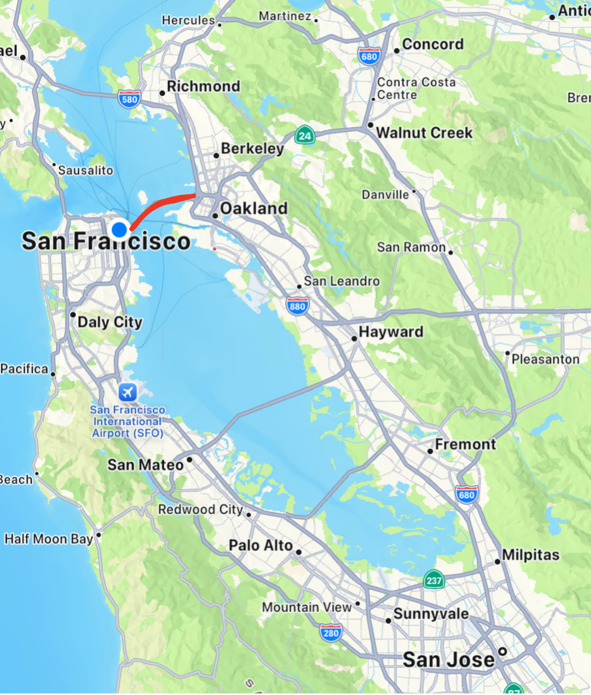

Richmond-San Rafael Bridge


The Richmond-San Rafael Bridge, completed in 1956, spans the San Francisco Bay, connecting Marin County to Contra Costa County. Initially designed to accommodate increasing post-World War II traffic, this bridge has undergone several renovations and expansions, including the addition of a pedestrian and bike path. Its two-deck structure offers stunning views of the bay, contributing to its iconic status.
San Mateo-Hayward Bridge


The San Mateo-Hayward Bridge, completed in 1967, stretches across the San Francisco Bay, linking the San Mateo Peninsula with the East Bay. As the longest bridge in California, it serves as a vital route for commuters and goods. Its original structure, built in 1929, was replaced to accommodate modern traffic demands, providing essential connectivity between these two regions.
Dumbarton Bridge


The Dumbarton Bridge, bridging the southern part of San Francisco Bay, connects the cities of Menlo Park and Fremont. First opened in 1927 as a privately operated venture, the current bridge was completed in 1982 to increase capacity. It holds the distinction of being the southernmost bridge in the Bay and provides an important connection for both vehicular and pedestrian traffic.
 

 
